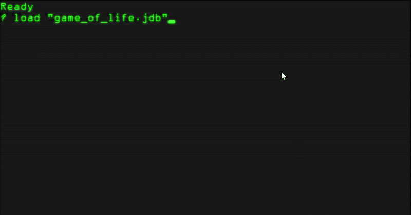
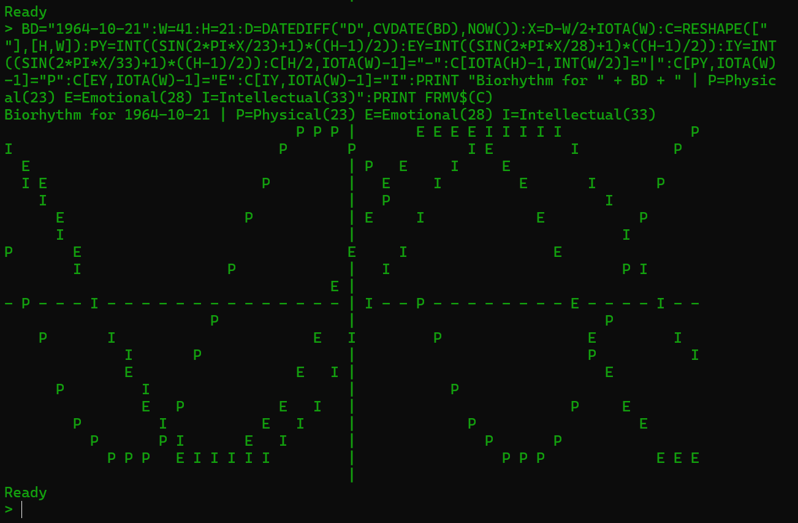

The Modern BASIC for Everyone.
A free interpreter blending the nostalgic simplicity of classic BASIC with the advanced features of modern programming, from game dev to AI.
Launch Web REPL »One Language, Endless Possibilities
Education & Hobbies
With a gentle learning curve and instant visual results from graphics and sound commands, jdBasic is the perfect way to learn programming fundamentals in a fun, engaging way.
2D Game Development
Build the retro game of your dreams with a complete multimedia toolkit: a full sprite engine, tilemap integration, collision detection, and Aseprite animation support.
AI & Machine Learning
A standout feature: jdBasic has a built-in `Tensor` object with automatic differentiation, allowing you to build and train complex neural networks (like Transformers) using simple syntax.
Automation & Scripting
Act as a powerful "glue" language. Run OS commands, parse files with regex, process CSVs, and even automate Windows applications like Excel with built-in COM support.
Simple Web APIs
The built-in non-blocking HTTP server lets you stand up a JSON API in just a few lines of code, perfect for microservices, webhooks, or lightweight backends for your apps.
Extensible with C++
The `DLLIMPORT` command provides an unlimited path for adding new capabilities. Extend the language with high-performance functions written in C/C++ by creating a `.dll` or `.so` file.
See What You Can Build
Create Retro Games and Simulations
With a complete graphics and sound library, you can bring your ideas to life quickly. The integrated sprite and map engine makes game development a breeze. This is Conway's Game of Life running natively.


Express Powerful Logic, Simply
jdBasic's APL-inspired array programming lets you perform complex calculations on entire datasets without writing slow, manual loops. This entire biorhythm chart was calculated and plotted in a single line of code.
From Simple to Sci-Fi, the Syntax is Yours
' Classic simplicity
INPUT "What is your name? "; name$
PRINT "Hello, "; name$
FOR i = 1 TO 5
PRINT "Iteration: "; i
NEXT i' Powerful array math
my_numbers = [10, 20, 30, 40, 50]
' Perform math on the whole array
my_numbers = my_numbers * 2 + 5
PRINT my_numbers
' Output: [25, 45, 65, 85, 105]' A simple AI tensor
a = TENSOR.FROM([[1,2], [3,4]])
b = TENSOR.FROM([[5,6], [7,8]])
c = TENSOR.MATMUL(a, b)
TENSOR.BACKWARD c
PRINT c
Get Started with jdBasic
Ready to dive in? Try jdBasic in your browser, download the interpreter for your OS, or read the comprehensive documentation.
Disclaimer: jdBasic is an experimental project intended for educational and hobbyist purposes. It is provided "as is" without warranty. Please do not use it for mission-critical applications.